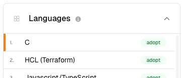
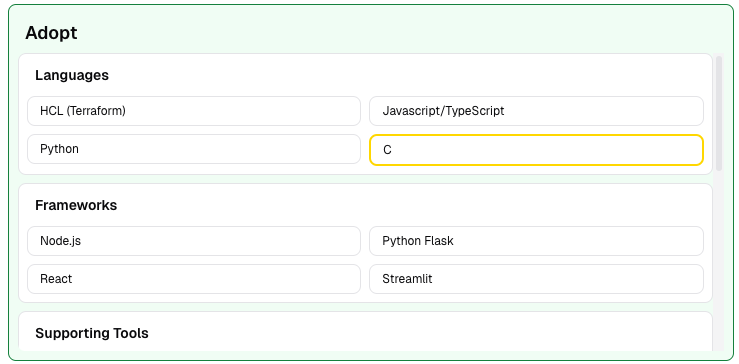

Multiple Directorate Support
Overview
This page outlines how multiple directorates are supported within the digital landscape.
Where are Directorates Defined?
Directorates are defined in directorates.json on AWS S3. This file contains an array of directorate objects, each with its own attributes (importantly an id, name and colour).
In order to get this file from S3, the frontend application makes a request to the backend API, which retrieves the file and returns it to the frontend.
Example Directorate Entries
[
{
"id": 0,
"name": "Digital Services (DS)",
"colour": "#1f77b4",
"default": true,
"enabled": true
},
{
"id": 1,
"name": "Data Science Campus (DSC)",
"colour": "#ff7f0e",
"default": false,
"enabled": true
},
{
"id": 2,
"name": "Data Growth and Operations (DGO)",
"colour": "#2ca02c",
"default": false,
"enabled": true
}
]
Key Attributes
| Attribute | Description |
|---|---|
id |
A unique identifier for the directorate. This is used to reference the directorate in each technology's timeline entries. Using an id over its name is required to avoid having to change existing data should the directorate name change. |
name |
The full name of the directorate. This is displayed in the UI when selecting a directorate. This will typically be in the format "Directorate Name (Abbreviation)". |
colour |
The colour associated with the directorate. This is used for visual differentiation in the UI. |
default |
A boolean indicating whether this is the default directorate. Only one directorate can be the default. This key is unlikely to be changed as Digital Services should always be the default. |
enabled |
A boolean indicating whether the directorate is enabled for use. This will allow us to disable directorates should the need arise. |
Tech Radar + Review Page
The Tech Radar and Review page both support multiple directorates, allowing technologies to be positioned in different radar rings based on directorate. This functionality supports scenarios where a technology is discouraged in one directorate but widely used and accepted in another. An example of this is R for statistical analysis, which is widely used and encouraged within Data Science teams but should be avoided in other directorates (i.e. Digital Services).
When it comes to creating radar views for directorates, Digital Services is used as a default view if other directorates have no specific technology positions. This means that if a technology is in the Adopt ring for Digital Services but has no position for Data Science, it will also appear in the Adopt ring for Data Science. This has been decided so that user don't have to position every technology for every directorate, which would be a significant overhead, additionally we want to try and keep the directorates as aligned as possible.
To give a high level picture of how this works, all directorates use the Digital Services radar as a base, and then apply any specific positions on top of that.
To facilitate technologies having different positions in different directorates, a directorate key has been added to timeline entries within onsRadarSkeleton.json.
Example Technology Entry
entries [
{
"id": "technology-id",
"title": "example technology",
"description": "Languages",
"key": "example-tech",
"url": "#",
"quadrant": "1",
"timeline": [
... <-- This part is where technologies get assigned to different rings
],
"links": []
},
]
Example Timeline Entry Pre-Directorate Support
{
"moved": 5,
"ringId": "adopt",
"date": "2025-09-09 16:32:13",
"description": "Moved from ignore to adopt.",
"author": "dev@ons.gov.uk"
},
Example Timeline Entry Post-Directorate Support
{
"moved": -3,
"ringId": "hold",
"date": "2025-09-09 16:39:18",
"description": "Moved from adopt to hold for Data Science directorate.",
"author": "dev@ons.gov.uk",
"directorate": 2 <-- This integer corresponds to the directorate id in directorates.json
},
The value of the directorate key corresponds to the id of the directorate in directorates.json.
How do we deal with old timeline entries?
Since timeline records created before directorate support was added do not have a directorate key, it is assumed that these entries are for the Digital Services directorate.
Think of the following structure for timeline entries without a directorate key:
{
"moved": -3,
"ringId": "hold",
"date": "2025-09-09 16:39:18",
"description": "Moved from adopt to hold for Data Science directorate.",
"author": "dev@ons.gov.uk",
"directorate": "Digital Services" <-- This key is assumed to be Digital Services if not present
},
How do we find the current position of a technology for a specific directorate?
On both pages, we first filter the timeline of each technology to only include entries for the selected directorate.
i.e. if the selected directorate is Data Science, the timeline will only include entries with "directorate": "Data Science".
If the filtered timeline is then empty, we fall back to the timeline for Digital Services. This is because we want Digital Service to be the default view if no specific positions exist for a directorate. Digital Services is like the master copy of the radar that should apply to all directorates unless otherwise specified.
Once filtered, we can simply look at the last entry in the timeline to determine the current position of the technology for that directorate. This is because the timeline list is treated as a stack within the code, so the last entry is always the most recent.
Worked Example
Let's say we have a technology with the following timeline entries:
"timeline": [
{
"moved": 5,
"ringId": "adopt",
"date": "2025-09-09 16:32:13",
"description": "Moved from ignore to adopt.",
"author": "dev@ons.gov.uk"
},
{
"moved": -3,
"ringId": "hold",
"date": "2025-09-09 16:39:18",
"description": "Moved from adopt to hold for Data Science directorate.",
"author": "dev@ons.gov.uk",
"directorate": 1
},
{
"moved": 2,
"ringId": "trial",
"date": "2025-10-01 10:00:00",
"description": "Moved from hold to trial for Data Science directorate.",
"author": "dev@ons.gov.uk",
"directorate": 1
},
{
"moved": -1,
"ringId": "assess",
"date": "2025-11-01 10:00:00",
"description": "Moved from trial to assess for Digital Services directorate.",
"author": "dev@ons.gov.uk",
"directorate": 0
}
]
If the selected directorate is Data Science Campus (DSC), we filter the timeline to only include entries with "directorate": 2 (the id for Data Science in directorates.json):
"timeline": [
{
"moved": -3,
"ringId": "hold",
"date": "2025-09-09 16:39:18",
"description": "Moved from adopt to hold for Data Science directorate.",
"author": "dev@ons.gov.uk",
"directorate": 2
},
{
"moved": 2,
"ringId": "trial",
"date": "2025-10-01 10:00:00",
"description": "Moved from hold to trial for Data Science directorate.",
"author": "dev@ons.gov.uk",
"directorate": 2
}
]
The last entry in this filtered timeline indicates that the current position of the technology for the Data Science directorate is in the Trial ring.
If the selected directorate is Digital Services, we filter the timeline to only include entries with "directorate": 0 or entries without a directorate key:
"timeline": [
{
"moved": 5,
"ringId": "adopt",
"date": "2025-09-09 16:32:13",
"description": "Moved from ignore to adopt.",
"author": "dev@ons.gov.uk"
},
{
"moved": -1,
"ringId": "assess",
"date": "2025-11-01 10:00:00",
"description": "Moved from trial to assess for Digital Services directorate.",
"author": "dev@ons.gov.uk",
"directorate": 0
}
]
The last entry in this filtered timeline indicates that the current position of the technology for the Digital Services directorate is in the Assess ring.
Highlighting Technologies + Visuals
To help users quickly identify which technologies are or have been moved specifically for their directorate, some visual cues are used:
- On the Tech Radar page, technologies that have any timeline entries for the selected directorate are highlighted with a small margin on the left side of the technology card.

- On the Review page, technologies that are in a position specifically for the selected directorate are highlighted with a border around the technology card.

- On both pages, a gradient background is applied to the top of the page to indicate which directorate is currently selected.
Note: The colours used in these visuals correspond to the colour attribute defined for each directorate in directorates.json. This allows us to easily change the colours associated with each directorate by simply updating the JSON file - i.e. if accessibility requirements change.
Project Page (Future Plans / TBC)
Should we ever need to extend directorate support to the Project Page, the same principles would apply.
Each project would have a directorate key which, when filtering projects, would be used to show only projects relevant to the selected directorate.
This would allow users to see projects specific to their directorate, while still having the option to view all projects if needed.
Note: This functionality would require the Tech Audit Tool to start collecting and storing the directorate key for each project, which is not currently implemented.
As above, project that do not have a directorate key would be assumed to belong to the Digital Services directorate.